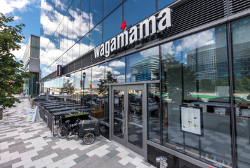

Boston is also a culinary hub, offering a diverse and vibrant restaurant scene. From fine dining establishments to casual cafes, Boston's restaurants cater to all tastes and preferences. Seafood is a staple in the city, with fresh catches of lobster, clams, and oysters being served in many seafood restaurants. Other popular cuisines include Italian, Chinese, and Indian, among others. Many restaurants in Boston offer stunning views of the city's historic sites and harbor, making dining out a truly unforgettable experience.
Nearby Restaurants
Wagamama
800 Boylston St
A casual dining restaurant that specializes in Asian-inspired cuisine.
Honeygrow
1282 Boylston St
Specializes in made-to-order stir-fry and salad bowls.
Penguin Pizza
735 Huntington Avenue
Delicious wood-fired pizzas and wide selection of craft beers.


Bangkok Pinto
1041 Tremont St
Serves a variety of classic Thai dishes, including noodle dishes, curries, and stir-fries, as well as soups, salads, and appetizers
Yume Wo Katare
1923 Massachusetts Ave
A unique Japanese restaurant, known for its signature dish, the "Jiro-style" ramen.
Dear Annie
1741 Massachusetts Ave
A variety of classic American and Mediterranean dishes, Served on Breakfast and Lunch.


Puritan & Co
1166 Cambridge St
Features a creative and seasonally-driven menu, which includes a range of small plates, entrees, and desserts made with fresh, locally-sourced ingredients.
Celeste.
134 Hampshire St
A Mediterranean restaurant
known for its delicious and creative small plates and mezze dishes.
India Quality Restaurant
484 Commonwealth Ave
An Indian restaurant known for its authentic and flavorful dishes. The menu features a wide variety of classic Indian cuisine, including vegetarian, vegan, and gluten-free options